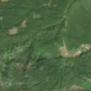
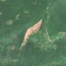

4,8 ha de pădure schimbată lângă Tărcăița
Între vara lui 2025 și 25 aprilie 2026, pe aproximativ 4,8 ha de pădure din comuna Rieni, lângă Tărcăița, județul Bihor, imaginile Sentinel-2 arată că vegetația a dispărut sau s-a schimbat puternic. În registrul public există o autorizație de tăiere pentru acest loc.
Autorizația de tăiere
cu autorizație
Parcela autorizată acoperă zona, iar autorizația era valabilă când s-a tăiat.


Înainte și după: Copernicus Sentinel-2, 10 m pe pixel, conturul zonei cu portocaliu. Poza detaliată (Esri World Imagery) e de acum 1–4 ani: arată ce era acolo înainte, nu tăierea.
Pe scurt
- Identificator
- 20260425_46545_22348
- Locul
- Tărcăița, comuna Rieni, județul Bihor (SIRUTA 30773)
- Coordonate (centru)
- 46.54496, 22.34775 · Google Maps · OpenStreetMap
- Suprafața
- 4,8 ha (din pixeli de 10 m; ± câțiva pixeli pe margine)
- Pădurea întreagă
- în vara lui 2025 (de atunci, nori sau iarnă)
- Prima imagine cu schimbarea
- 25 aprilie 2026
- Imagini în care se vede schimbarea
- 8
- Cât de sigur e semnalul din satelit
- medie
- Autorizația cea mai apropiată
- APV 2500157000560 · Ocolul Silvic Beiuș, valabilă 1 februarie 2026 – 30 septembrie 2026, la 0 m de zonă
- Terenul
- pădure de stat, după amenajamentul silvic publicat
- Arie protejată
- Codru Moma
- Pădure pierdută în jur, alți ani
- 2009, 2014, 2015, 2017, 2025 (Hansen)
- Garda Forestieră
- Oradea
Dacă vrei să verifici sau să sesizezi
- Pădurile din județul Bihor sunt în grija Gărzii Forestiere Oradea, care controlează tăierile și dă amenzile.
- Autorizația găsită în zonă e emisă de Ocolul Silvic Beiuș.
- Formularul Gărzii Forestiere Naționale primește sesizări și fără nume. Trimite linkul acestei pagini, coordonatele și pozele. Dacă tăierea e în desfășurare, sună la 112.
- Autorizațiile și transporturile de lemn se pot căuta în Inspectorul Pădurii.
Pagina arată ce se vede din satelit și ce scrie în registrul public; nu e o dovadă în sine.
Din alte surse
- presă (probabilă): Știre despre tăieri la Tărcăița, Bihor, 05.08.2026: „Incendiu puternic de pădure în Tărcăița. Pompierii au acționat și noaptea trecută (FOTO/VIDEO) - Bihoreanul” Nu e sigur că e vorba de aceeași tăiere. sursa
- presă (probabilă): Știre despre tăieri la Tărcăița, Bihor, 12.08.2026: „Zi de foc în Bihor: 11 incendii în câteva ore. La Tărcăița, pădurea arde din nou, pe alte 19 hectare (FOTO) - Bihoreanul” Nu e sigur că e vorba de aceeași tăiere. sursa
- presă (probabilă): Știre despre tăieri la Tărcăița, Bihor, 09.08.2026: „Inca un incendiu de padure la Tarcaita: 26 de pompieri lupta cu focare... - Bihoreanul” Nu e sigur că e vorba de aceeași tăiere. sursa
- presă (probabilă): Știre despre tăieri la Tărcăița, Bihor, 10.08.2026: „Incendiul de padure de la Tarcaita nu a fost stins: peste 60 de pompieri... - Bihoreanul” Nu e sigur că e vorba de aceeași tăiere. sursa
- presă (probabilă): Știre despre tăieri la Tărcăița, Bihor, 05.08.2026: „Incendiu de pădure la Tărcăița, în județul Bihor: focul a afectat 21 de hectare, iar pompierii intervin pentru a doua zi - Realitatea.NET” Nu e sigur că e vorba de aceeași tăiere. sursa
- presă (probabilă): Știre despre tăieri la Tărcăița, Bihor, 05.08.2026: „Pădurea Tărcăița arde de aproape o zi. 24 de hectare afectate - InfoOradea” Nu e sigur că e vorba de aceeași tăiere. sursa
- presă (probabilă): Știre despre tăieri la Tărcăița, Bihor, 05.08.2026: „Incendiu de mari proporții, în pădurea din Tărcăița. Pompierii intervin în condiții dificile pentru stingerea focarelor - bihon” Nu e sigur că e vorba de aceeași tăiere. sursa
Cum citezi zona
Linkul acestei pagini nu se schimbă. Dacă zona iese vreodată de pe hartă, pagina rămâne, cu data și cu ce știam despre ea.
Pădurea RO, zona 20260425_46545_22348: 4,8 ha, Tărcăița, comuna Rieni, județul Bihor; schimbare văzută din satelit între vara lui 2025 și 25 aprilie 2026. https://iliemihai.github.io/padurea-ro/zona/20260425_46545_22348/ (consultat la [data]). Date: CC BY 4.0.
Datele zonei: GeoJSON · toate zonele: date deschise · licența CC BY 4.0.
Istoricul zonei pe hartă
Starea se poate schimba când registrul publică o autorizație sau când analistul vede poze mai bune. O ținem aici, ca un link citat să arate și ce spuneam atunci.
Pe hartă cel târziu din 5 noiembrie 2026.
- 5 noiembrie 2026 – azi · cu autorizație
Detalii tehnice, pentru verificare
De ce acest nivel de încredere:
- văzută schimbată în 8 imagini diferite
- peste 3 ha
- pădurea din jur e neschimbată
- ultima dată am văzut-o intactă în vara lui 2025 (de atunci, nori sau zăpadă)
- fără părerea AI
- Placa Sentinel-2
- 34TES
- NDVI de referință
- 0.87
- NBR de referință
- 0.6
- Scăderea în pădurea din jur
- 0.0
- Persistență
- 1.0
- NDVI / NBR după
- 0.436 / 0.151
Cum se calculează fiecare: metodologia.
Pune harta zonei într-un articol
Copiază codul în articol (merge în majoritatea site-urilor de știri). Sau pune doar linkul: WhatsApp, Facebook și X arată singure poza zonei.